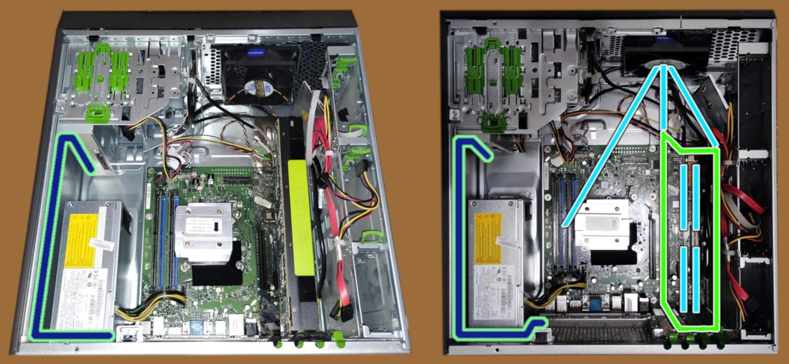

Dual PSU for Esprimo P910 installation
This document is still working in progress and it is the natural prosecution of the previous one.Dual PSU installation
Just to recap, the main problem of providing 225W TDP, 300W peak to the Nvidia Tesla K80 was mainly related with the proprietary power system embedded into the Fujitsu Esprimo P910 and therefore too hard to change without doing a bricolage that would far beyond the educational scope of this project. Therefore an industrial 1U standard rack PSU has been chosen, which has been designed and built to power the ATX PC-based automated point of sales (PoS). For this reason it is particularly small, compared to the standard ATX power supply unit and cheap, compared with the PC-gaming market segment. This PSU's height is almost the same, a little less, than a standard DVD-ROM reader, shorter and less wide (150mm x 82mm x 41 mm). Plus it does not have the standard holes to receive the plate used into P910 to lock the DVD-ROM in its place. For a confrontation, the hosted DVD-ROM was 150mm x 165mm x 42mm. Moreover, once it replaces the DVD-DOM, it offers the 3 pole male plug on the front side of the case which is not particularly comfortable, safe but the cable is much more at risk of being accidentally unplugged and aesthetically pleasant. For these reasons, in creating a custom adapter, I built it in a way in which it will be easy in the near future to move the 3 pole C14F plug on the back of the tower case.
right click menu to enlarge (x4) the image
Venting system
About the venting system, I was considering to use 2 fan 5020 or 5015 to place outside the back of the case, in front of the 2 PCI slots engaged by the Tesla K80 for sucking air trought its airflow tunnel, while the main fan into the case would push air into it, as show here.
right click menu to enlarge (x4) the image
New challenges
Enlarging the image above and looking at the right side of the Nvidia K80 card, we can be assured that fitting a couple of 12cn fans overthere, in that narrow and messy space, will be not easy but requires some kind of cabling rearrangement, at least. If it is possible. The second challenge arises looking at that same image but on the opposite side of the case. Considering the length of the cable ordered as the next material batch, it is quick to determine that it is not long enough to reach the diametrical opposite side of the case. In fact, the cable ordered is 60cm long while to reach the ending point shown in the second image of this paper, it needs 100cm. In this case, the availability or the price are not the major driver of this choice, but noticing that with 60cm, it can reach the grid below the Fujitsu original PSU. Despite the relatively simplicity of the P910 model and the Fujitsu attitude to maniacally lock the cables in position, within the case, there are many cables. For sure more cables than available or free points for locking a relatively big cable like a power one. While in the top of the case there is an almost lack of cabling and reaching the first grid available for hosting a C14F plug is quite straightforward. There are not any locking points for the cable, but a nice 3M duct-tape will be enough to win the gravity.

right click menu to enlarge (x4) the image
In this image above, the lime-green bordered blue lines indicate where the power cabling, from the front of the newly installed PSU, is going to find its way to end back in the rear of the tower case.
Too nice and easy to be true... In fact, compared with opening a hole at the end of data storage bays row, going to tackle metal grid over there and possibly spread conductive crumbs which might go around for the circuitry in a brisky mood... is not the most appealing scenario.
right click menu to enlarge (x4) the image

right click menu to enlarge (x4) the image

[... continuing ...]
Share alike
© 2025, Roberto A. Foglietta <roberto.foglietta@gmail.com>, CC BY-NC-ND 4.0